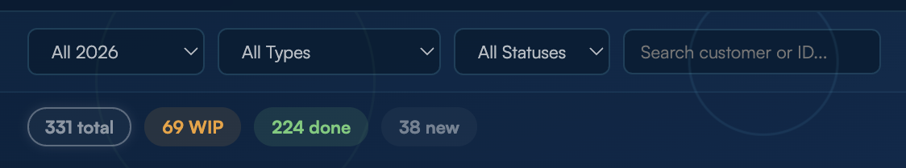
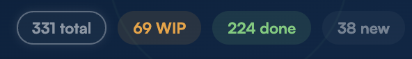

Click the colored numbers to filter: WIP, Done, New, ack, canceled. Click multiple to combine. Click "total" to reset.



When you change the SharePoint Status, the tracker can email the customer automatically with a branded Intel Foundry message:
Auto emails ON/OFF — when OFF, nothing is sent to anyone.
Test mode ON/OFF — when ON, every email goes ONLY to Jair (no customer, no CC). Turn OFF for real sending.


Set the SharePoint Status to Complete and a popup appears depending on the service type:
Completing marks the progress bar to 100% instantly — no reload.

When you complete a Codename request, a popup asks for the codename to assign to the company.


Each card shows three people fields from SharePoint:
The owner also shows as a purple chip in the card header, so you can see who's on each request without opening it.
Codename and IFS NDA must each live on their own request. When one of them comes bundled with other services, a Separate request button appears inside the card.

Both the tracker and this guide have a help chatbot — the round chat button in the bottom-right corner.
Use it any time you're stuck or have an idea to improve the tracker.